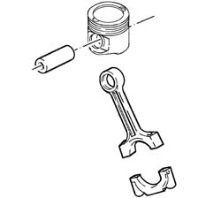
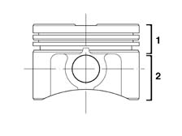

Introduction - PISTONS AND CONNECTING RODS
- Path
- Descriptions > 10 ENGINE > 1028 PISTONS AND CONNECTING RODS > Introduction - PISTONS AND CONNECTING RODS
- Kind
- system description
- Applies to
- all engines; all production periods
- Interactive page
- https://sloeber94.github.io/elrnDB-fPnd/en/#/2753455
Applies to: engines: 1.1, 1.2 8v; all production periods
CONSTRUCTION FEATURES
The connecting rods are made from spheroid cast iron. The pins are the fixed type and are matched with the connecting rod.

Applies to: engines: 1.1, 1.2 8v; all production periods
COMPOSITION
The connecting rod consists of a body or shank, with a rectilinear axis, which rigidly connects the small end, fixed on the gudgeon pin; and the big end, fixed on the crankpin with bearings interposed.
The big end is divided into two parts for fitting reasons: the fixed part is in one piece with the body and the moving part, called cap, is connected to the former by studs.
As the connecting rod is subjected to compression and combined compressive and bending stresses, it tends to become deformed; consequently the connecting rod body must be made so as to combine light weight with maximum strength, and so it is constructed as a double T section.
The connecting rod is the main connecting element between the piston and the crankshaft.
Applies to: engines: 1.1, 1.2 8v; all production periods
CONSTRUCTION FEATURES
The aluminium-silicon alloy pistons are graded into three sizes; to ensure correct assembly, an arrow is stamped on the crown to show the direction of rotation of the engine.
Applies to: engines: 1.1, 1.2 8v; all production periods
COMPOSITION
The piston consists of two parts:
- The head (1) or the area containing the piston rings, slightly smaller in diameter than the cylinder to allow for the thermal expansion of the metal.
- The skirt (2) or guide for the small end which supports the side thrust.
The skirt contains two bosses for housing the gudgeon pin.

Applies to: engines: 1.1, 1.2 8v; all production periods
COMPOSITION
These pistons have a steel ring incorporated between the skirt and the head which has the task of preventing the expansion of the skirt in a transverse direction in relation to the gudgeon pin axis.
Applies to: engines: 1.1, 1.2 8v; all production periods
OPERATION
This is the component which directly receives the engine impulse from the pressure of the combustion gas, via the connecting rod, and transmits the drive force to the crankshaft.
It should meet the following requirements:
- high mechanical resistance, which makes it possible to withstand the explosion pressures (~35 kg/cm2 ) and the dynamic stresses;
- high resistance to heat and wear;
- good thermal conductivity, to transmit heat from the hot area to the cold area underneath;
- light weight and extremely quiet operation, both when cold and when hot.
In order to have low specific pressure at the skirt in the working direction and therefore low consumption, both for the skirt and the cylinder liners, the gudgeon pin should be offset (by about 3% of the bore) in relation to the piston axis, on the opposite side to the direction of rotation.